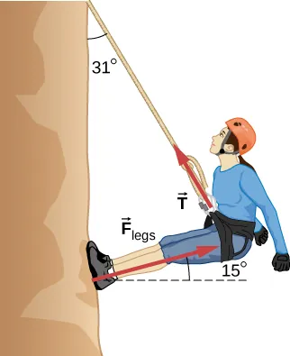
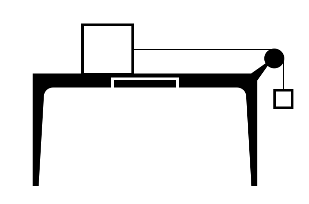
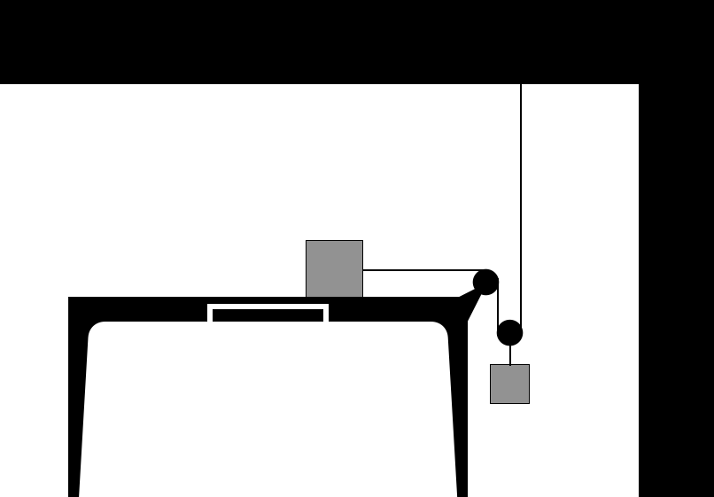

C4.4 Problems#
Problem C4.1#
A 10.0 kg block is on a horizontal plane with a coefficient of kinetic friction of 0.30. A horizontal force of 50.0 N is applied to the block. Determine the acceleration of the block.
# DIY Cell
Problem C4.2#
A dog walker is enjoying a quiet stroll in a park with three dogs: Fisher, Jack, and Luke. The relaxing walk takes a turn for the worse as a squirrel runs across the path, a tennis ball appears out of nowhere, and another dog barks. Fisher pulls with a force of 75 N directed 24 degrees east of north, Jack pulls with a force of 55 N directed 35 degrees south of west, and Luke muster 18 N directed 58 degrees south of east. What is the magnitude and direction of the net force?
# DIY Cell
Problem C4.3#
You are pushing a shopping cart at the local grocery store with a constant velocity. The cart has a mass of 18 kg and the coefficient of kinetic friction between the cart and the floor is 0.40.
What force must you apply if you push with a horizontal force?
What force must you apply if you push with a force directed 32 degrees below the horizontal?
# DIY Cell
Problem C4.4#
A block of mass 2.0 kg is placed on a frictionless inclined plane that makes an angle of 30.0 degrees with the horizontal. Calculate the acceleration of the block down the incline.
# DIY Cell
Problem C4.5#
A block of mass 2.0 kg is placed on a frictionless inclined plane that makes an angle of 30.0 degrees with the horizontal.
Calculate the acceleration of the block down the incline when a force of 5.0 N is applied horizontally on the block and resisting the motion of the block.
What minimum force must be applied to keep the box from sliding down and what is the normal force in that situation?
# DIY Cell
Problem C4.6#
An elevator with a mass of 800 kg is moving upward at a constant speed of 4 m/s when it suddenly starts accelerating upward at a rate of 2 m/s\(^2\). Determine the force experienced by a 70 kg passenger inside the elevator during this acceleration.
# DIY Cell
Problem C4.7#
Consider the 52.0 kg mountain climber shown below.
Find the tension in the rope and the force that the mountain climber must exert with her feet on the vertical rock face to remain stationary. Assume that the force is exerted parallel to her legs. Also, assume negligible force exerted by her arms.
What is the minimum coefficient of friction between her shoes and the cliff?

This problem is a slightly modified version from OpenStax. Access for free here.
# DIY Cell
Problem C4.8#
A machine at a post office sends packages out a chute and down a ramp to be loaded into delivery vehicles.
Calculate the acceleration of a box heading down a 10.0\(^\circ\) slope, assuming the coefficient of friction for a parcel on waxed wood is 0.100.
Find the angle of the slope down which this box could move at a constant velocity. You can neglect air resistance in both parts.
This problem is a slightly modified version from OpenStax. Access for free here.
# DIY Cell
Problem C4.9#
A block with a mass of 2.5 kg is being pulled across a horizontal surface. The coefficient of friction between the block and the surface is 0.20. The pulling force is 12 N and parallel to the surface.
Use Newton’s 2nd law to find the acceleration of the block.
If the block starts from rest, what is the speed of the block after being pulled a distance of 5.0 m?
How long time did it take to pull it a distance of 5.0 m?
# DIY Cell
Problem C4.10#
A 2.0 kg box is being pulled up a 15\(^\circ\) incline by a 15 N pulling force that is parallel to the incline. The coefficient of friction between the box and the surface is 0.25.
Use Newton’s 2nd law to find the acceleration of the block.
If the incline is 12 m long and the box starts from rest, what is its speed at the top?
How long time did it take to pull the box from the bottom to the top of the incline?
What is the work done by the diligent student worker who pulled the box?
# DIY Cell
Problem C4.11#
Consider two blocks A and B connected by a massless rope and a massless disk as shown in the Figure.

Block A has a mass of 2.0 kg and is placed on the table top. The coefficient of kinetic friction between the block and the table surface is 0.30. Block B has a mass of 1.5 kg. The blocks are held in place until \(t = 0\) s when they are released.
Draw a free-body-diagram of each block.
What is an equation of constraint in this problem?
Find the acceleration of block B using Newton’s 2nd law.
If the initial distance between Block B and the floor is 1.2 m, how long time does it take to reach the floor?
What is the speed of block B right before it hits the floor?
What should the static friction be to prevent the system from accelerating?
# DIY Cell
Problem C4.12#
Consider two blocks A and B connected by a massless rope and two massless disks as shown in the Figure.

Block A has a mass of 2.0 kg and is placed on a frictionless table top. Block B has a mass of 1.5 kg. The blocks are held in place until \(t = 0\) s when they are released.
Draw a free-body-diagram of each block.
What is an equation of constraint in this problem?
Find the acceleration of block B using Newton’s 2nd law.
If the initial distance between Block B and the floor is 1.2 m, how long time does it take to reach the floor?
What is the speed of block B right before it hits the floor?
# DIY Cell
Problem C4.13#
An elevator filled with passengers has a mass of \(1.70\times 10^3\) kg.
The elevator accelerates upward from rest at a rate of 1.20 m/s\(^2\) for 1.50 s. Calculate the tension in the cable supporting the elevator.
The elevator continues upward at constant velocity for 8.50 s. What is the tension in the cable during this time?
The elevator accelerates opposite to the motion at a rate of 0.600 m/s\(^2\) for 3.00 s. What is the tension in the cable during acceleration opposite to the motion?
How high has the elevator moved above its original starting point, and what is its final velocity?
This problem is from OpenStax. Access for free at https://openstax.org/books/university-physics-volume-1/pages/6-problems
# DIY Cell
Problem C4.14#
A box rests on the (horizontal) back of a truck. The coefficient of static friction between the box and the surface on which it rests is 0.24. What maximum distance can the truck travel (starting from rest and moving horizontally with constant acceleration) in 3.0 s without having the box slide?
This problem is from OpenStax. Access for free at https://openstax.org/books/university-physics-volume-1/pages/6-problems
# DIY Cell